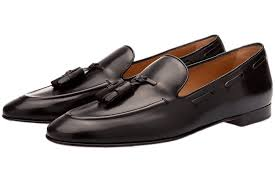
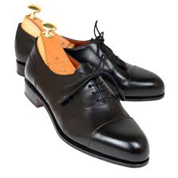

The Life of Shoes
Dress Shoes
Whenever you have a special occassion such as a wedding,interview or formal event: tennis shoes aren't going to make the cut. Below are 3 out of the many types of dress shoes to choose from.

Loafers
Easy to slide on, shoe stringless and the most popular choice of dress shoes right now, Loafers are the current trend.

Oxfords
Your common dress shoe would be the Oxfords. Typically have shoes strings and are good

Chuka Boots
For more stylish, more laxed type of occasions: chuka boots are your go tos especially if you want to stand out.